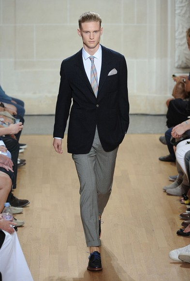

经典解读 单粒扣&双粒扣西装穿搭要点
天气突然转凉，单薄的衬衫外面开始需要添加一件既足够保暖又能使你帅气加分的衣款，西装外套自然成了型男的首选。一件西装的款式和材质是我们选购时最注重 的，但是往往忽略了纽扣的数量和排列这一要素。其实一般男士西装的款式变化主要在领子和纽扣上，它们的排列非常有讲究，会影响着西服的整个版型和风格。下 面精选多款经典穿搭作为参考，挑选一下哪款更适合你的身型和气质。

1.单粒扣西装 最难把控：
单粒扣的西服，其纽扣是与上衣袋口处于同一水平线上，这种款式源于美国的绅士服，最初在庆典和宴会等庄重场合穿着，是70年代流行的款式。单粒扣西装虽然 还没有成为职场主流装扮，但相信不少男士的衣柜里还都可以找到它的踪迹。单粒扣西装给人带来随性洒脱的精神面貌，当下正受到年轻时尚一族的喜爱，现在就来 看看它的穿着要点吧。
系扣:由于单粒扣西装的扣子一般都在腰线的位置，系上扣子腰部轮廓明显，西装更加收身，视觉上，强调了你宽肩细腰的"倒三角"身形。男人也需要线条，这种款型把腰线勾勒的足够完美，极大的修饰了上下身的长短比例，想要小秀一下身材的你值得入手一件尝试下。
敞开：一般而言纽扣个数越多看起来越是正式。单粒扣西装多用于休闲场合，经常可以不系纽扣，保持自然敞开的状态。
示范穿搭：

系扣西装更收身
Tommy Ton街拍
Tommy Ton街拍
Tommy Ton街拍
单品推荐：
D&G外套, 约合1914RMB. D&G西装背心, 约合1531RMB.
衬衣 J Lindeberg , 约合510RMB
Aquascutum 外套,约合2520RMB. Aquascutum裤子, 约合1116RMB
Marni衬衫, 约合1742RMB
Emporio Armani外套 约合5098RMB Emporio Armani裤子, 约合2227RMB.Brooks
Brothers 衬衫,约合957RMB. Paul Smith 领带, 约合414RMB.
2.双粒扣西装显得很潮流，大牌多推出此款，堪称经典
双粒扣西服分为单排扣和双排扣两种。单排两粒扣款式最为经典，穿着普遍，成为男西服的基本样式，并从纽扣位置的高低和驳领开头的变化反映出不同风格。双排 两粒扣西服多为枪驳领，下摆方正，衣身较长。这具有严谨、端庄的特点。无论是商务，宴会还是休闲，穿上两粒扣的西装都不失合理的选择，可以说两扣西装是中 规中矩的典范，它适合不同年龄，不同体型，不同场合的需要。
示范穿搭：
只系一粒扣：潇洒随意
Tommy Ton街拍
Tommy Ton街拍
Tommy Ton街拍
Tommy Ton街拍